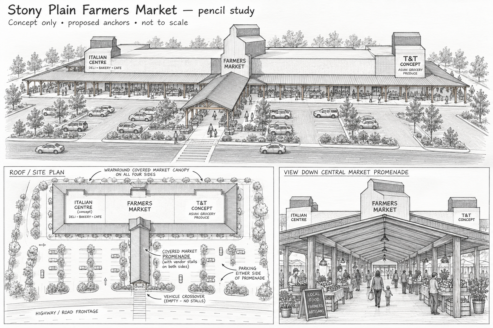
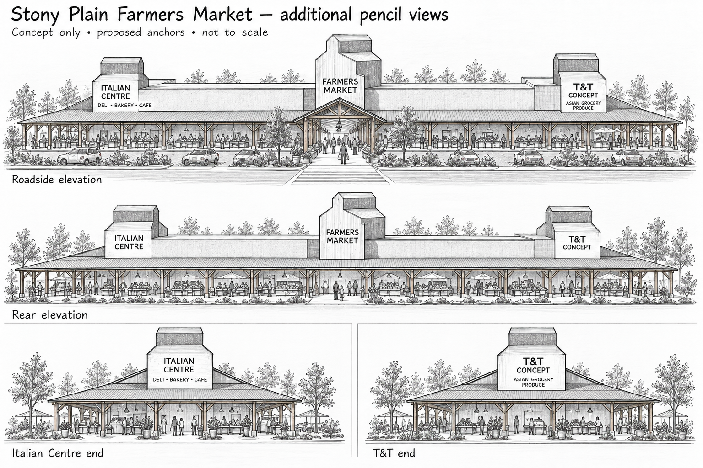
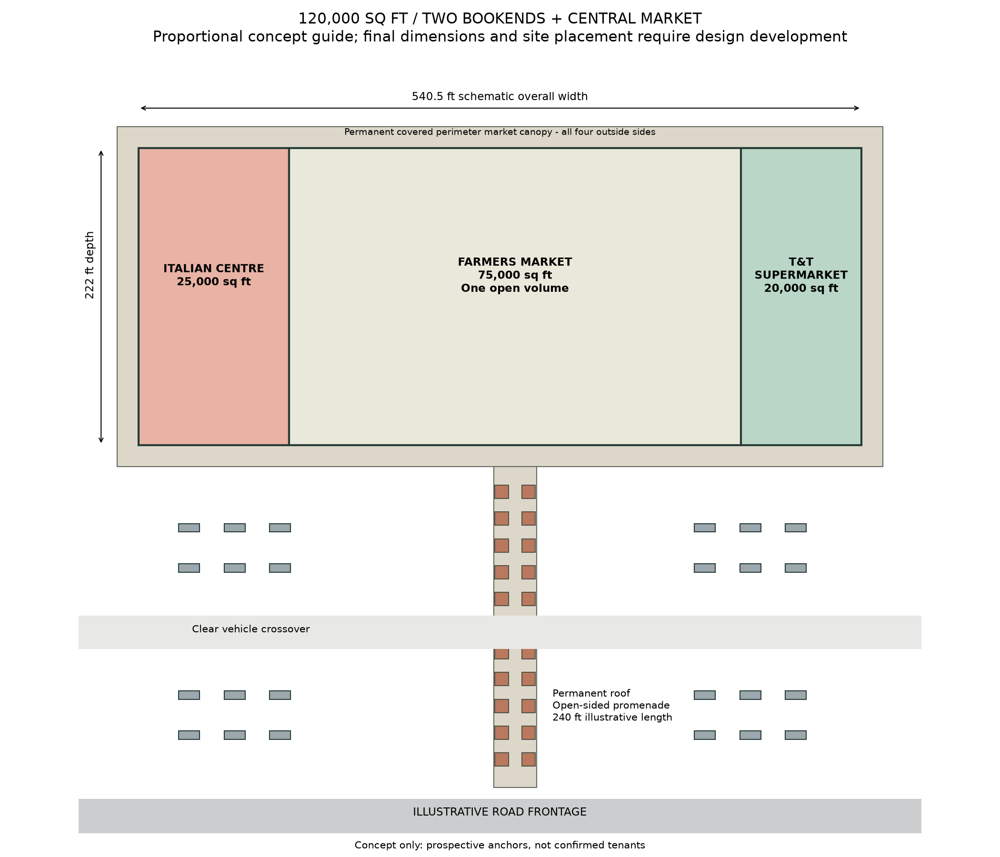

Italian Centre Shop
25,000 sq ft
The concept places Italian Centre at this end, with room for its deli, bakery, grocery and cafe experience. The prospective tenant can customize the layout, storefront and fit-out.
Local concept preview · Published site unchanged
Stony Plain Farmers Market / Historical concept study
An approximately 120,000 sq ft single-storey market concept: Italian Centre and T&T Supermarket shown as prospective anchors at either end, and a central farmers market connected to a permanently covered outdoor promenade.
Latest pencil perspective / retained in the history
Accepted illustrative perspective with a larger building-to-person relationship. The current programme remains approximately 120,000 sq ft; these drawings do not establish measured dimensions. Italian Centre and T&T are earlier illustrative anchor examples, not committed tenants.

From pencil to place
These are the original pencil sheets that establish the architectural direction: prospective Italian Centre at one end, prospective T&T Supermarket at the other, and the central farmers market with a permanently covered promenade.


Area allocation in this study
The central market remains at about 75,000 sq ft. The two anchor stores are added as bookends, bringing the enclosed single-storey concept to about 120,000 sq ft.

Proposed concept with Italian Centre and T&T Supermarket shown as the intended anchor examples. Tenancies are not confirmed.
Here are the opportunities
A 75,000 sq ft central farmers market, bookended by a 25,000 sq ft Italian Centre concept and a 20,000 sq ft T&T concept. Each anchor can customize its layout, storefront and fit-out.
25,000 sq ft
The concept places Italian Centre at this end, with room for its deli, bakery, grocery and cafe experience. The prospective tenant can customize the layout, storefront and fit-out.
20,000 sq ft
The concept places T&T Supermarket at the opposite end, with a grocery and produce destination. The prospective tenant can customize the layout, storefront and fit-out.
Final footprints and tenant requirements remain to be developed. Named operators are illustrative examples, rather than confirmed occupants or endorsements.
The 75,000 sq ft central indoor hall remains a single open volume, with movable market stalls. Permanent matching roofs shelter exterior stalls around the entire building perimeter, including all four outside faces and the outer anchor-store ends. The open-sided covered market promenade extends toward the road frontage, with an illustrative route approximately 240 feet overall, including a clear vehicle crossover, and parking on either side. Permanent matching roofs cover its vendor sections. The original pencil places the crossover at the road end; the proportional plan explores a mid-route crossing. Its final position and roof clearance will be developed with the site layout.
Weekend market activity can expand outdoors while the anchor stores operate throughout the week. Decorative prairie grain-elevator landmarks give the building its identity. The current direction has no second floor, perimeter mezzanine or upper promenade, keeping the interior adaptable for commercial leasing if a future alternative use is needed.
Photorealistic views / Earlier direction
The replacement renderings will show the enlarged approximately 120,000 sq ft building: Italian Centre 25,000 sq ft, central farmers market 75,000 sq ft, and T&T Supermarket 20,000 sq ft. Vehicles will remain small in proportion to the full building, and the permanent covered promenade is illustrated at approximately 240 feet long.
The original pencil concept remains the visual starting point. This earlier rendering brief is retained as historical context. See the current concept presentations on The Opportunity.
This current concept supplements the published site's Before & After, Market Overview, Master Plan and Architect’s Vision. Earlier proposals remain historical context; their mezzanine concepts are superseded by the current single-storey direction.
Saved snapshot: Before & After (new tab) · Saved snapshot: Market Overview (new tab) · Saved snapshot: Master Plan (new tab) · Saved snapshot: Architect’s Vision (new tab)
Previous published website (manus.space, new tab)
Explore the earlier Before & After, Market Overview, Master Plan and Architect’s Vision in the historical tabs.
The current anchor opportunity is presented on the opening page. These earlier studies remain available as design history.